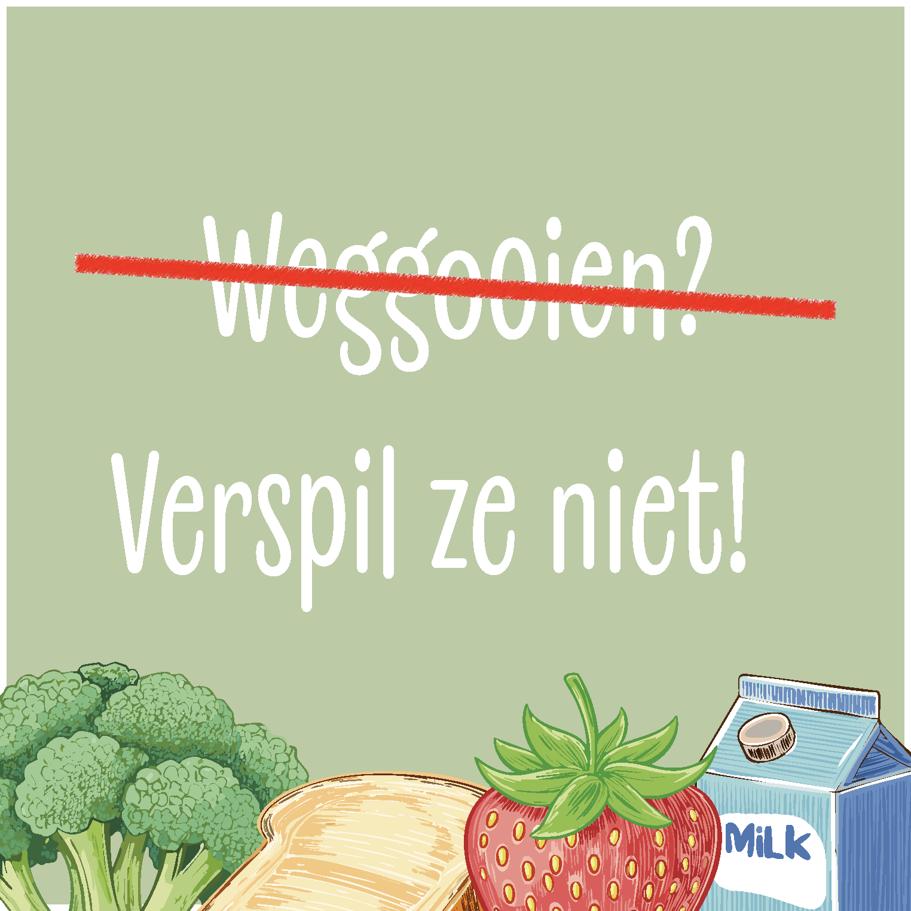
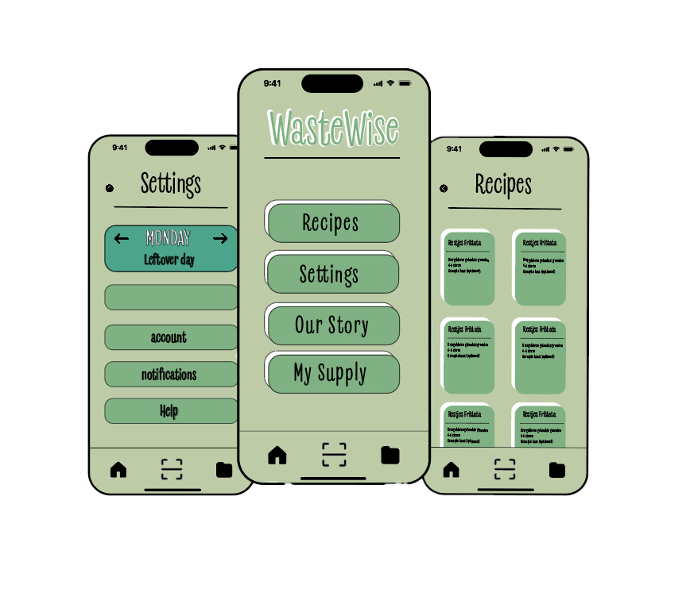

Campagne tegen voedselverspilling voor Voedselbank Nederland
Probleemstelling
De basis van deze campagne lag bij een maatschappelijk probleem: voedselverspilling. Dagelijks wordt er enorm veel voedsel weggegooid, vaak simpelweg omdat mensen het overzicht kwijt zijn van wat ze nog in huis hebben of niet weten wat ze ermee kunnen maken.
Voor ons was het belangrijk om dit probleem niet alleen te benoemen, maar vooral te begrijpen. Waar gaat het mis in het gedrag van mensen? En hoe kun je dat op een laagdrempelige manier beïnvloeden? Vanuit die vraag zijn we het project gestart.

Concept & Oplossing
Vanuit het probleem zijn we gaan nadenken over een concrete oplossing. In plaats van alleen bewustwording te creëren, wilden we iets ontwikkelen dat mensen direct helpt in hun dagelijks leven. Hieruit ontstond het idee voor een app die gebruikers ondersteunt bij het verminderen van voedselverspilling. Het doel was om gedrag te veranderen door het makkelijker te maken om goede keuzes te maken, in plaats van mensen alleen te vertellen wat ze fout doen. De campagne kreeg daarmee een duidelijke richting: praktisch, toegankelijk en gericht op actie.

Ontwikkeling
In de ontwikkelfase hebben we het concept verder uitgewerkt tot een werkend idee. De kern van de app is een AI-functionaliteit waarmee gebruikers de inhoud van hun koelkast kunnen scannen. Op basis daarvan genereert de app suggesties voor gerechten, zodat ingrediënten optimaal worden benut en minder snel worden weggegooid. Naast de app hebben we ook een website ontwikkeld die dient als centraal platform voor de campagne.
Hier wordt het concept uitgelegd en worden gebruikers gestimuleerd om bewuster met voedsel om te gaan. Om de campagne zichtbaar te maken in de fysieke wereld hebben we daarnaast posters ontworpen. Deze zorgen voor herkenning en trekken de aandacht, waardoor de stap naar de app en website kleiner wordt. Door deze combinatie van digitale en fysieke middelen ontstaat een samenhangende campagne die op meerdere momenten en plekken impact maakt.
Design & Uitwerking
In het designproces hebben we gefocust op toegankelijkheid en duidelijkheid. De visuele stijl moest aansluiten bij het onderwerp duurzaamheid, maar tegelijkertijd fris en uitnodigend blijven. De interface van de app is daarom simpel en overzichtelijk gehouden, zodat gebruikers snel begrijpen hoe het werkt. Ook in de website en posters hebben we gekozen voor een heldere hiërarchie en sterke visuele elementen die de boodschap ondersteunen. Het doel van het design was om de drempel zo laag mogelijk te maken en gebruikers te stimuleren om daadwerkelijk actie te ondernemen.
Reflectie
Dit project was een sterk voorbeeld van hoe je vanuit een maatschappelijk probleem kunt toewerken naar een concrete en toepasbare oplossing. Door niet alleen te focussen op bewustwording, maar juist op gedragsverandering, hebben we een concept ontwikkeld dat direct waarde toevoegt in het dagelijks leven van gebruikers.
Wat dit proces voor mij vooral interessant maakte, was het combineren van technologie, design en strategie binnen één project. Het liet zien hoe belangrijk het is om een idee niet alleen goed te bedenken, maar ook door te vertalen naar verschillende middelen en touchpoints.